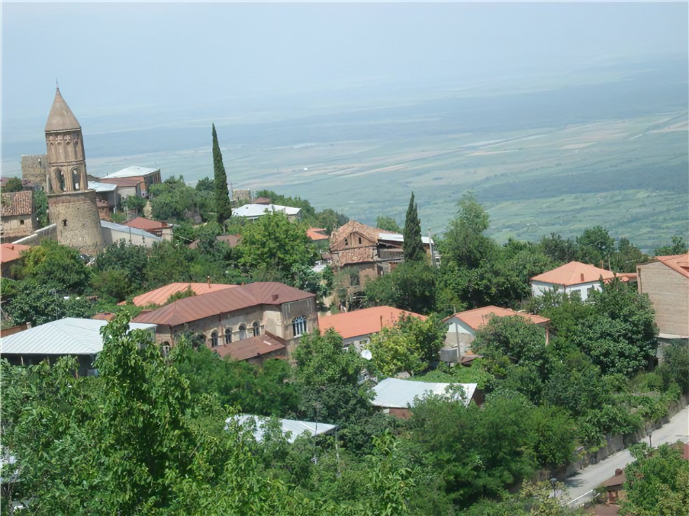
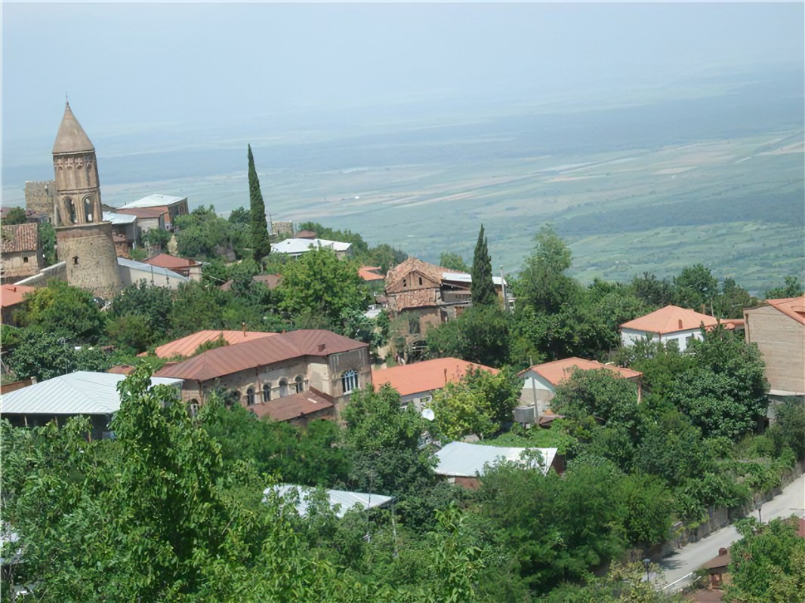
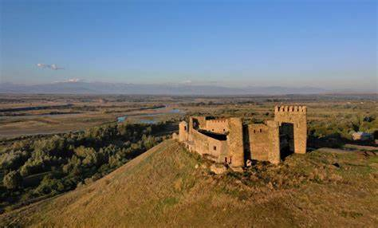
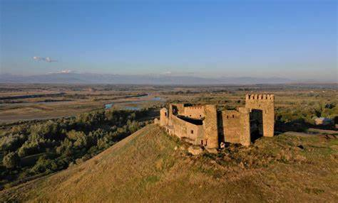
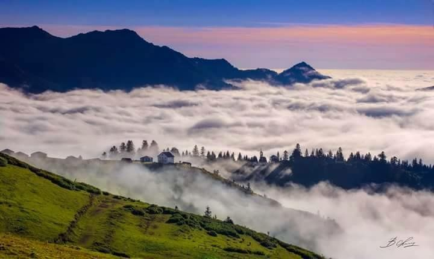
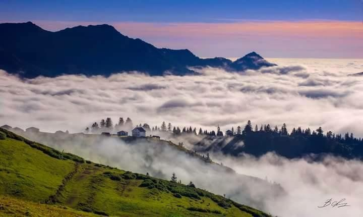

კახეთი ცნობილია კულტურულ ძეგლთა სიმრავლით. არაერთი ეკლესია-მონასტერი თუ ციხესიმაგრე იპყრობს ტურისტებისა და ექსკურსანტების ყურადღებას. კახეთის გამორჩეულად ცნობილი კულტურული ძეგლებია: ნინოწმინდა, ბოდბე, ხორნაბუჯი, უჯარმა, სიღნაღი, გურჯაანის ყველაწმინდა, ალავერდი, ახალი და ძველი შუამთა, იყალთო, გრემი, ნეკრესი. თითოეული ეკლესია-მონასტერი ძველი ტრადიციის მატარებელია, დღემდე მოქმედებს მათი სახელობითი დღესასწაულები. ეს კი საუკეთესო ფაქტორია მომლოცველთა ან უბრალოდ კულტურული ტურიზმით დაინტერესებულთათვის. მხარეს დიდი პოტენციალი აქვს ღვინის ტურიზმის განვითარებისთვის. კახეთის მეღვინეობის ისტორია ჩვ. წ. აღ-მდე III–II საუკუნეში იწყება და დღემდე მხარის ეკონომიკის უმნიშვნელოვანეს დარგს წარმოადგენს.
კახეთს დასავლეთიდან ესაზღვრება ქართლი, ხოლო ჩრდილოეთით კავკასიონის ქედი დაღესტნიდან ჰყოფს. კახეთში წარმოდგენილია ჰავისა და ლანდშაფტის მრავალფეროვნება, აქ გვხვდება როგორც სუბტროპიკული, ისე სტეპური ბუნება. საშუალო ტემპერატურა ზამთარში +1.4 °C, ხოლო ზაფხულში +23–25 °C-ია. კახეთის ბუნება მეტად მრავალფეროვანია, რეგიონის მასშტაბით გვხვდება ნახევრადუდაბნოები, მარადმწვანე ტყეები და სუბალპური მცენარეული საფარიც კი. ყველაზე დაბალი ადგილი ელდარის ვაკეა (90–150 მ. ზღ. დ.), ხოლო უმაღლესი — თებულოსმთა (4493 მ.).
 

ნიკო ბერძენიშვილის აზრით ქართლის ტომის თავდაპირველი საცხოვრისი ქვემო ქართლი იყო. ძვ.წ. IV-III საუკუნეებში ქართლის ჰეგემონობით ჩამოყალიბდა ქართლის სამეფო, რომელსაც ბერძნულ წყაროებში იბერიის სამეფოდ მოიხსენიებდნენ. მისი დედაქალაქი ჯერ მცხეთა იყო, შემდეგ თბილისი. X საუკუნეში იგი გაერთიანებული ქართული სახელმწიფო ცენტრი გახდა და გაჩნდა ტერმინი საქართველო. XV-XVIII საუკუნეებში აქ ჩამოყალიბდა ქართლის სამეფო (მოგვიანებით, ქართლ-კახეთის სამეფო), რომელიც 1801 წელს ანექსირებულ იქნა რუსეთის იმპერიის მიერ.
ძველი ქართლის მოსახლეობის უმნიშვნელო რაოდენობამ მოაღწია ჩვენამდე. ქართლში ინტენსიურად ხდებოდა მოსახლეობის მოძრაობა. მოსახლეობის რაოდენობის შევსება ხდებოდა მთებიდან ან იმერეთიდან ჩამოსახლებული ადამიანებით. XVII საუკუნიდან იწყება ოსების ჩამოსახლება შიდა ქართლში. XIX-XX საუკუნეების მიჯნაზე ქართლში შემორჩენილი იყო დიდი ოჯახები. ჩვეულებრივ, ქართლში ოჯახში სულთა რაოდენობა 20-დან 30-მდე მერყეობდა. დღეს ქართლში გვარ-სახელები ძირითადად -შვილი სუფიქსით ბოლოვდება, მაგრამ ირკვევა, რომ ადრე მათ -ძე სუფიქსი ერთვოდა, მაგ. სოფელ დიღომში მცხოვრები თეთრაშვილები, მძევაშვილები და სონღულაშვილები XIV-XVIII საუკუნეების საისტორიო საბუთებში თეთრაძედ, მძევაძედ და სონღულიძედ არიან ჩაწერილები.

სვანეთის ტერიტორიაზე ადამიანის ცხოვრების კვალი ნეოლითის ხანიდნა, ძვ. წ. VIII-VII ათასწლეულიდან ფიქსირდება. ნეოლითური სადგომებია აღმოჩენილი ზემო სვანეთში ლენჯერში და ქვემო სვანეთში ცხმელურში. ბრინჯაოს ხანაში, ძვ. წ. IV-I ათასწლეულებში სვანეთში გაჩნდა მჭიდრო დასახლება. ზაგრაშში და ლეფურის მთაზე აღმოჩნდა ბრინჯაოს ხანის სპილენძის მაღაროები, საიდანაც მოპოვებულ მადანზე ადგილზევე მოპოვებულ დარიშხანს ან სტილბიუმს ურევდნენ და მაღალი ხარისხის ბრინჯაოს ნაწარმს იღებდნენ. ბრინჯაოს წარმოების მსხვილი ცენტრი იყო მდინარე რიონის ზემო წელიც, რომელიც, ასევე, სვანეთის ნაწილი იყო. სვანების თავდაპირველი განსახლების ტერიტორია მოიცავდა დღევანდელ სვანეთს, ასევე რაჭა-ლეჩხუმს, კოდორის ხეობას დღევანდელი სამეგრელოს ნაწილს. სვანური წარმოშობისაა სოხუმის ძველი სახელწოდება ცხუმი. სვანური ტოპონიმები და სვანური ნაგებობები დასტურდება ასევე თერგისა და ყუბანის სათავეებში.
მეფის მთავრობამ სწრაფად და უმტკივნეულოდ მოაგვარა ქვემო სვანეთის შეერთება. მისი საკითხი ფაქტიურად 1804 წელს სამეგრელოს სამთავროს შეერთებით გადაჭრა. გრიგოლ დადიანის მიერ რუსეთის ქვეშევრდომობაში შესვლაზე დადებულ „ხელშეკრულებაში“ არა მარტო სამეგრელოს, არამედ ქვემო სვანეთის შეერთებაზეც იყო საუბარი. უფრო მეტიც, დადიანის „სათხოვარ პუნქტებში“ ქვემო სვანეთის წიაღისეული სიმდიდრეც რუსეთის საკუთრებად იყო გამოცხადებული. რაკი ქვემო სვანეთის ნაწილი უშუალოდ დადიანის ხელში იყო, ჩოლურსა და ლაშხეთს დამოუკიდებელი არსებობის საშუალება ესპობოდათ და იძულებული იყვნენ რუსეთის ქვეშევრდომობაში შესულიყვნენ.
 

გურიაში ქვედა პალეოლითიდან მოყოლებული ადამიანის ცხოვრების უწყვეტი კვალია დადასტურებული. ძველი ქვის ხანის ნაშთები ხვარბეთ-ნაღობილევშია აღმოჩენილი. დგინდება კულტურათა თანმიმდევრული განვითარების პროცესი, რაც ბრინჯაოსა და შემდგომი ხანის მთელ მანძილზე გრძელდებოდა. ნეოლითური პერიოდის ნამოსახლარებია ანასეული და გურიანთა. ანასეული I ადრენეოლითური უკერამიკო კულტურის ძეგლია, ანასეული II და გურიანთა კი წარმოადგენენ გვიან, განვითარებულ ნეოლითს, სადაც ქვის იარაღებთან ერთად გვხვდება გამომწვარი თიხის ჭურჭელი, კაჟის, რიყის ქვისა და ობსიდიანისგან დამზადებული დანები, სახვრეტები, ხელსაფქვავები, სათლელები, სატეხ-სასრესები, ცულები, კაჟის ისრისპირები, წერაქვის მსგავსი იარაღები, ხელჩაქუჩები, შურდულის ქვები. ნეოლითის პერიოდის არქეოლოგიური მასალაა აღმოჩენილი აგრეთვე ნაგომარსა და ვაკიჯვარში. ბრინჯაოს ხანას მიეკუთვნება მელექედურში, ბაღდადში, ვაკიჯვარში, შრომასა და მაკვანეთში აღმოჩენილი ნივთები. ურეკ-წვერმაღალაში აღმოჩენილი ურეკის განძი ასახავს ძვ. წ. II ათასწლეულის II ნახევრისა და I ათასწლეულის I ნახევრის პერიოდს, როდესაც ძლიერდება კოლხეთის სამეფო და რკინის წარმოება.
ისტორიულად იგი შემოსაზღვრული იყო ჩრდილოეთით რიონით, რომელიც ჰყოფდა სამეგრელოსგან, სამხრეთით ჭოროხით, სამხრეთ-აღმოსავლეთით ჭოროხ-აჭარისწყლის შესართავიდან ფერსათის მთა-მდე ესაზღვრებოდა აჭარა და მცირე მონაკვეთზე ასევე სამცხე. აღმოსავლეთიდან ესაზღვრებოდა იმერეთი, ხოლო დასავლეთიდან შავი ზღვა.
სამეგრელო (მეგრ. სამარგალო) — დასავლეთ საქართველოს ისტორიულ-გეოგრაფიული მხარე. ეს არის მდინარე რიონს, ცხენისწყალს, ენგურსა და შავ ზღვას შორის მოქცეული ტერიტორია. სახელწოდება მომდინარეობს ისტორიული მხარის ეგრისის სახელიდან. ქართულ წერილობით წყაროებში იხსენიება XII საუკუნიდან. თავდაპირველად გაიგივებული იყო მთლიანად დასავლეთ საქართველოსთან (მსგავსად აფხაზეთისა, იმერეთისა), XIII-XV საუკუნეებში უკვე ვიწრო მნიშვნელობა აქვს — აღნიშნავს ქართველების ეთნოგრაფიული ჯგუფით — მეგრელებით — დასახლებულ მხარეს მდინარეებს ფსირცხასა (ძვ. ანაკოდიისწყალი) და ცხენისწყალს შორის. ცენტრალური ქალაქია ზუგდიდი.
1803 წლის 4 დეკემბერს სამეგრელოს მთავარი გიორგი დადიანი ირჩევს რუსეთის ვასალობას[2]. სამეგრელო რუსეთის იმპერიის შემადგენლობაში შევიდა 1857 წელს. 1860 წლის კამერალური აღწეით სამეგრელოში აღირიცხა 303 თავადი და 2073 აზნაური.[3] რუსეთის იმპერიის შემადგენლობაში სამეგრელო არსებობდა ზუგდიდისა და სენაკის მაზრების სახით